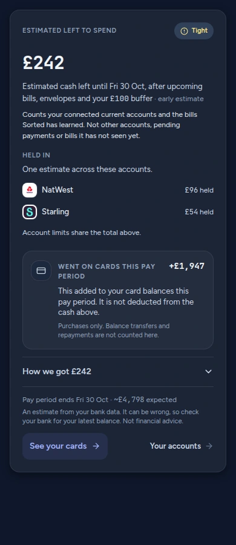
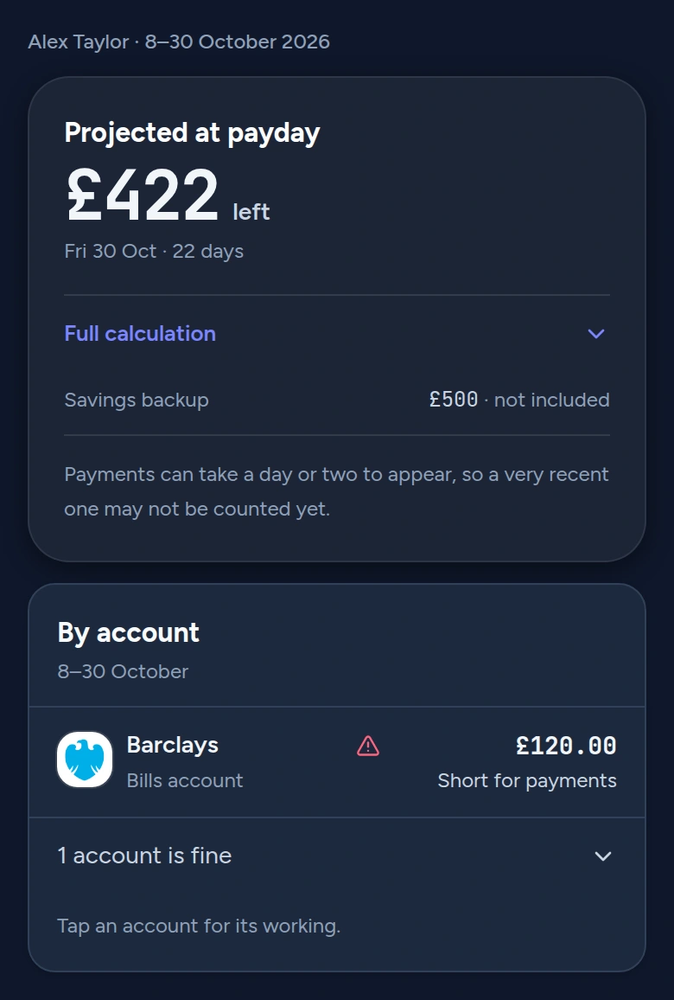

Money, made clearer
Know what’s left
before payday.
Sorted turns the accounts you connect into an estimated view of everyday money.
See plansSign in
See what is expected before payday.
Upcoming brings together the payments Sorted has learned, so the estimate has context.
What this estimate counts
Plan for a payment, a goal or a little more breathing space.
Use Payday plan, goals and set-asides to organise the period. Ask Penny to help you understand the figures.
Choose the view that fits your money.
Start free with Statements. Bank connections start with Lite. These are web prices; store checkout prices may differ.
Lite
£5.99 a monthUp to 10 accounts. 40 Penny messages a month.£59.99 billed yearlyStandard
£9.99 a monthUp to 25 accounts. 150 Penny messages a month.£99.99 billed yearlyPlus
£12.99 a monthUnlimited accounts. 300 Penny messages a month.£129.99 billed yearlyEligible new paid subscriptions get a 14-day trial. Card details needed. Renews automatically unless cancelled.
Connect, understand, decide.
- Bring in the pictureSorted reads the accounts you connect and the bills it has learned.
- See the estimateIt works out an estimated amount left to spend before payday.
- Choose your next stepUse upcoming payments, plans and Penny to look at what matters next.
Your data stays your business.
This website has no forms, analytics or tracking cookies. The app’s privacy notice explains how your account information is used.
Read the privacy noticeNeed to check something?
Sign inA few clear answers.
What does Left to spend mean?
It is an estimate of what may be left before payday, based on your connected accounts and learned bills.
Counts your connected current accounts and the bills Sorted has learned. Not other accounts, pending payments or bills it has not seen yet.
Can Sorted get it wrong?
An estimate from your bank data. It can be wrong, so check your bank for your latest balance. Not financial advice.
Will I be charged after the trial?
Eligible new paid subscriptions get a 14-day trial. Card details needed. Renews automatically unless cancelled.
Are the app stores available yet?
Store availability is being confirmed. Use the web app to sign in today.